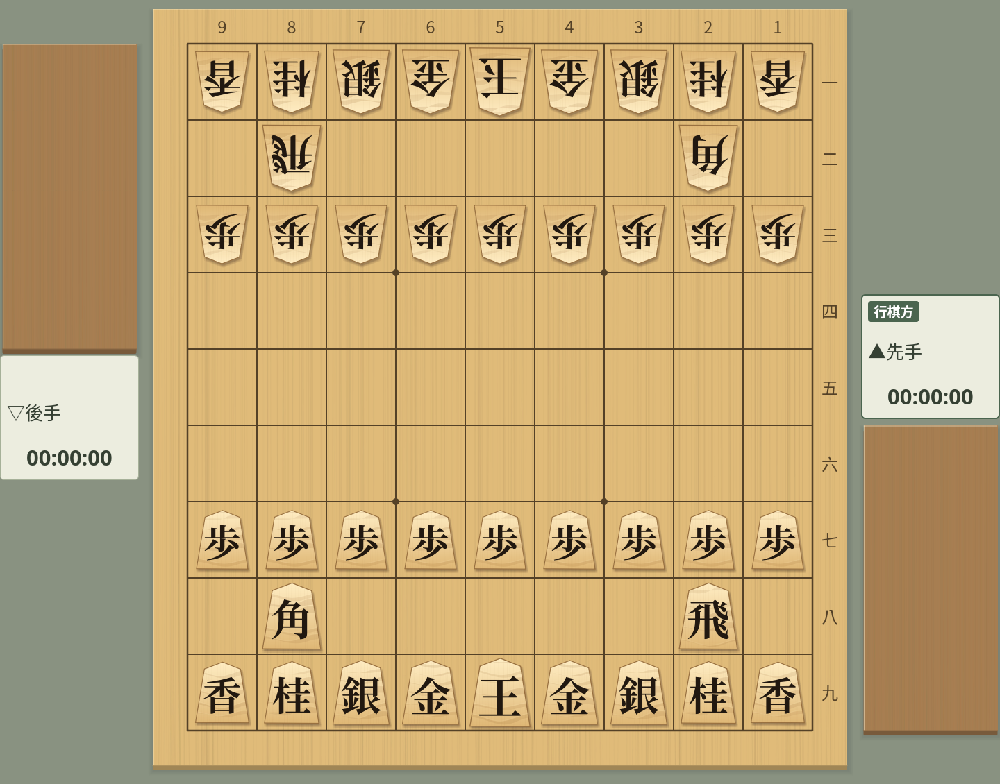
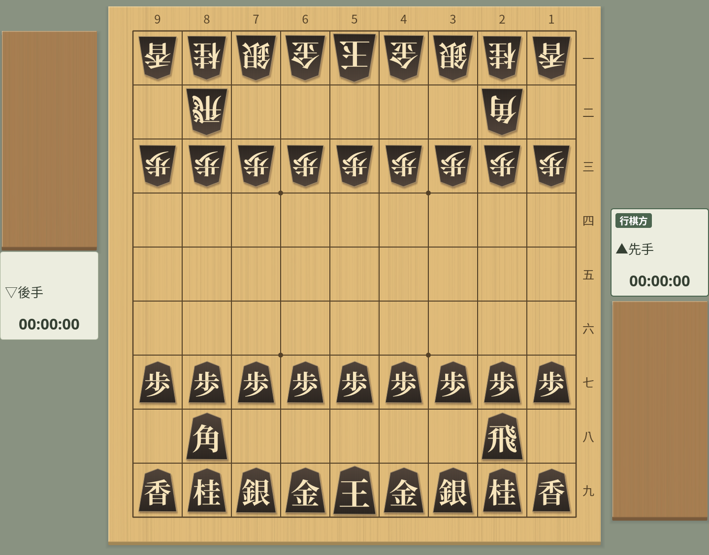
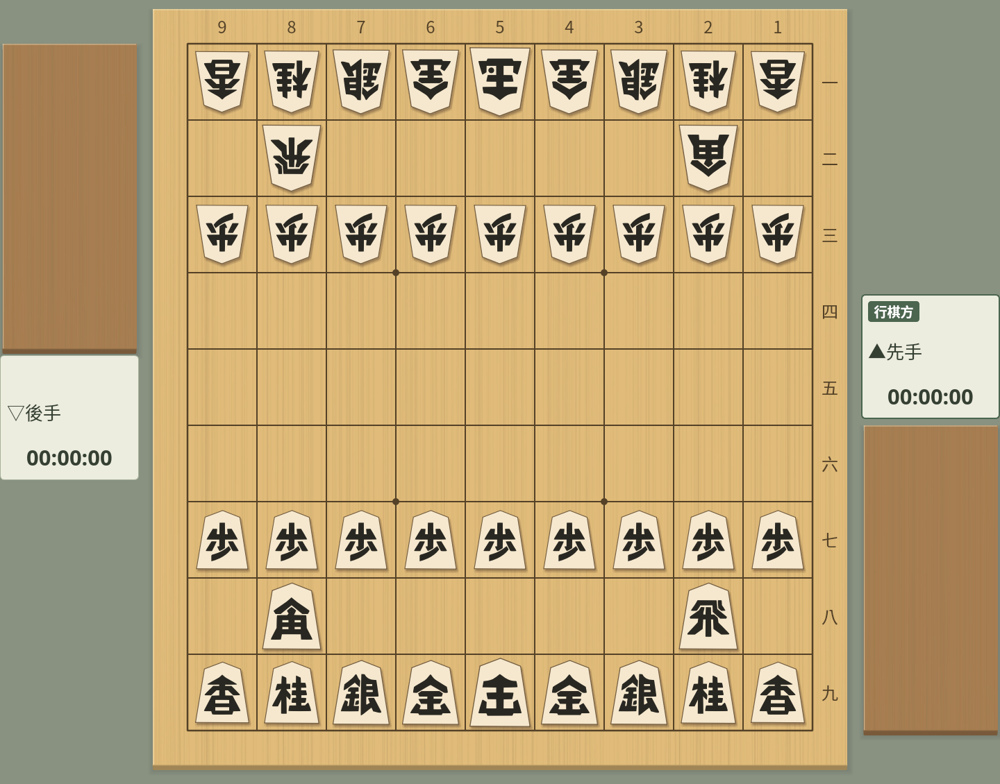

棋子樣式
共用同一棋子外形的 40 種棋子
截圖於 Linux 上以繁體中文介面擷取。
在外觀視窗中選擇棋子
在「檢視」→「對局外觀…」的「棋子」分頁中，可以選擇標準棋子和 39 種變化。追加的棋子分為「虎紋」「原木」「淺色」「深色」「符號」「西洋棋」「字母」7 組。所選棋子會立即生效，下次啟動時也會恢復。
以前的「糸柾」（細直紋）已直接成為標準棋子，原本的標準棋子可以作為「木紋」選擇。如果以前選擇了「糸柾」，會在保持外觀不變的情況下切換為「標準棋子」。
棋盤上、持駒、主要變化、詰棋等所有棋盤都使用相同的棋子。配色、棋子大小和陰影可以在「對局外觀」的「詳細設定」中調整。

20 種變化
所有變化的外形、明朝體文字和大小都與標準棋子相同，透過改變木紋和色調來搭配不同的棋盤。預設仍為「標準棋子」。
| 組 | 棋子樣式 |
|---|---|
| 虎紋 | 淺虎紋・絹虎紋・琥珀虎紋・赤虎紋・金虎紋 |
| 原木 | 淺木・木紋・琥珀直紋・竹紋・胡桃木 |
| 淺色 | 亞麻・淡櫻・青瓷・月白・藤灰 |
| 深色 | 烏木・鐵藍・森林綠・葡萄紫・墨金 |
淺色和原木的棋子使用深色文字，深色的棋子使用淺色文字。成駒以朱色或明亮的紅色文字區分。


淺虎紋


烏木
戰國漢字
「符號」組中的「戰國漢字」是把王、步等文字與武將頭盔融為一體的粗獷抽象字形的棋子。外形、各類棋子的大小和先後方向都與標準棋子相同。
在亞麻色的棋面上配以墨色文字，成駒以朱色區分。成銀、成桂、成香為「全」「圭」「杏」。


戰國漢字
西洋棋風格的棋子：Facet・Atelier・Ribbon
「西洋棋」組中，可以從線條硬朗的 Facet、雕刻風格的 Atelier、以輪廓表現的 Ribbon 各 3 種配色（木色・白色・墨色）共 9 套中選擇。不使用漢字或字母，而以王冠、城堡、馬、盾、槍等形狀區分棋子。
五角形外形和各類棋子的大小與標準棋子相同。成駒的圖案變為紅色，王將和玉將使用相同的王冠。棋子的走法和持駒規則仍是將棋的規則。
在「推薦組合」中選擇同名的項目，棋盤、駒台和背景也會一起搭配好。「墨色」是深色棋盤搭配淺色棋面的配色。


字母棋子：端正・凜・墨
「字母」組中有明朝體的端正、凜、墨 3 種字體，各 3 種配色（木色・白色・墨色），共 9 套。一般為黑色字母，成駒以同一字母的紅色區分。
王・玉 = K、飛 = R、角 = B、金 = G、銀 = S、桂 = N、香 = L、步 = P。五角形外形和各類棋子的大小與標準棋子相同，文字高度和留白也配合棋子大小調整。
在「推薦組合」中選擇同名的項目，棋盤、駒台和背景也會變為樣本的配色。棋子的走法和持駒規則與一般將棋相同。